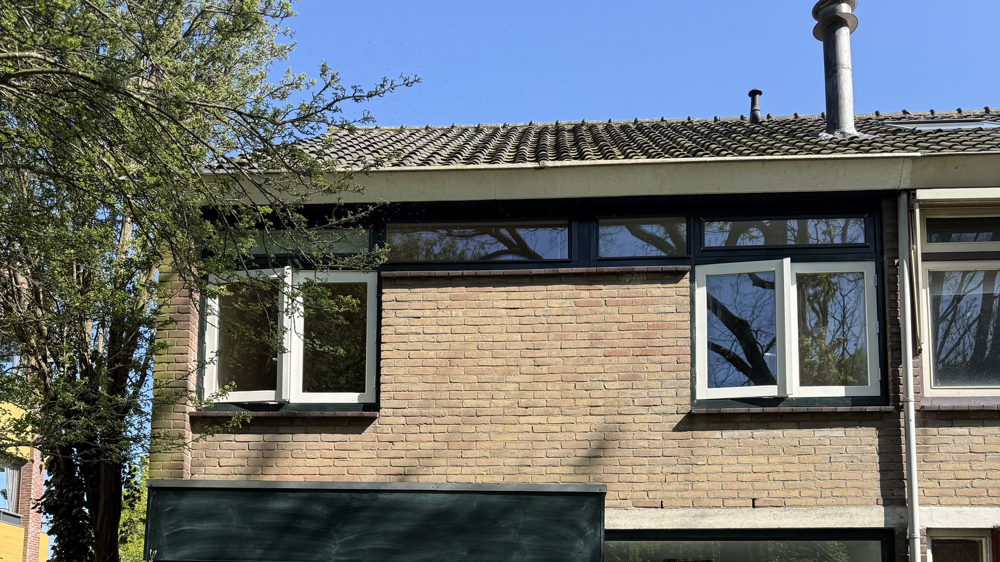
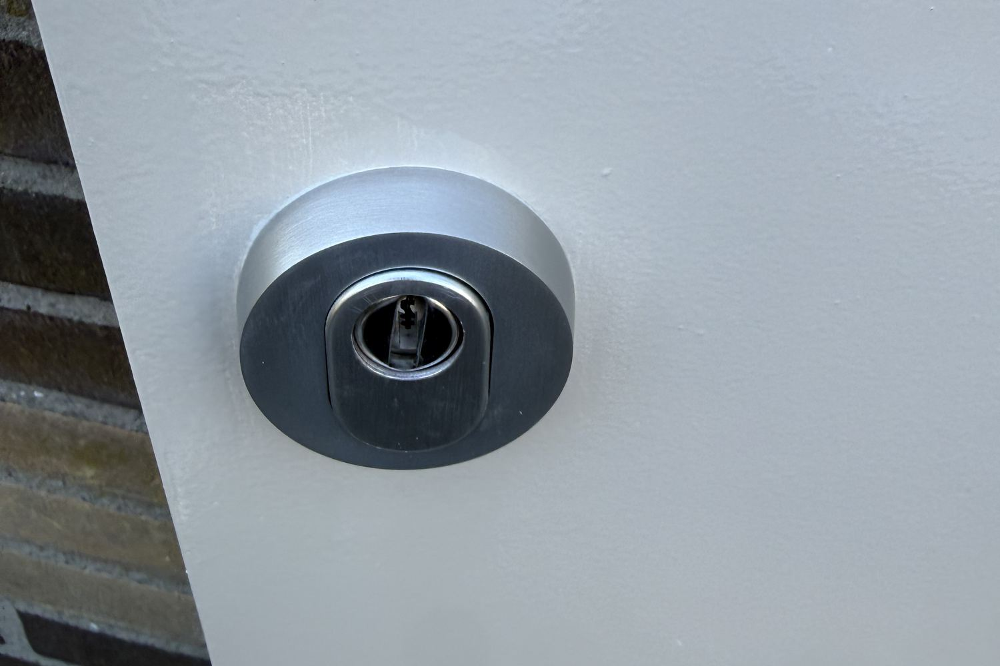
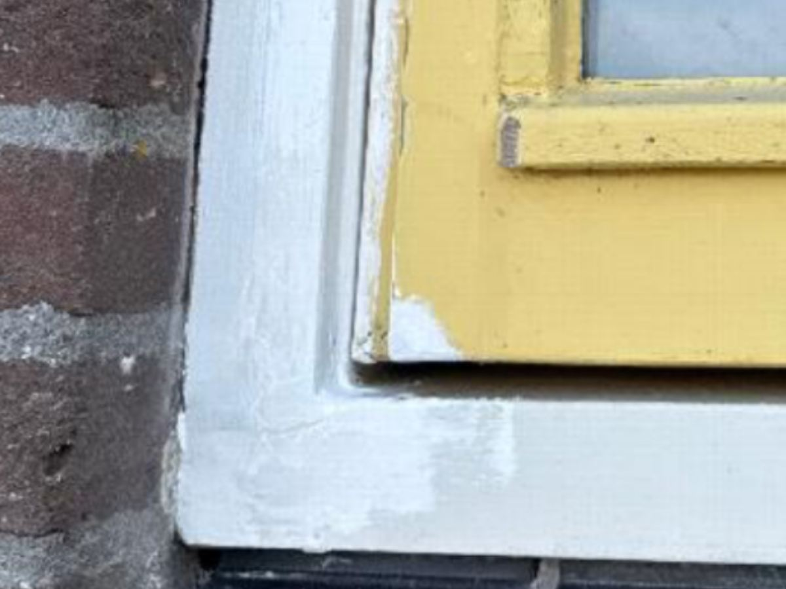
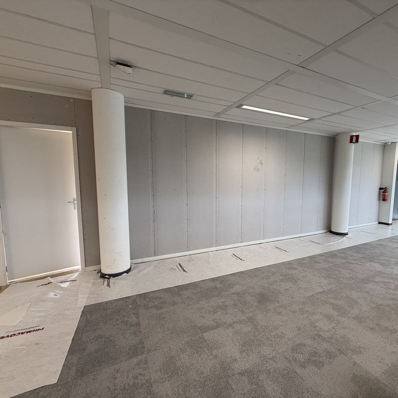

Uw huis.
Weer in orde.
Van een raam dat niet meer sluit tot een gevel die toe is aan iets nieuws. Uw timmerman in Voorne aan Zee, Spijkenisse en Ouddorp.
Vertel over uw klus
Grote plannen.
Kleine klussen.
Allebei welkom.
Kozijnen, deuren, gevels en onderhoud. We kijken samen wat uw huis nodig heeft.
Dit kunnen we voor u doen- Gediplomeerd & verzekerd
- Snelle service
- Vrijblijvende offerte
Eén timmerman.
Veel mogelijkheden.
Er is meer dan één manier om uw huis op te knappen. ATO helpt u met timmerwerk aan en om de woning.

Ramen & deuren
Nieuwe ramen, deuren of complete kozijnen, netjes op maat geplaatst en afgewerkt.
Bespreek deze klusGevelbekleding
Een nieuwe uitstraling voor uw gevel, met bekleding van Trespa of multiplex.
Bespreek deze klusBoeilijsten
Verweerde boeilijsten vervangen, in het materiaal dat het beste bij uw woning past.
Bespreek deze klusHoutrotherstel
Houtrot in kozijnen vakkundig herstellen. We bekijken eerst wat nog te behouden is.
Bespreek deze klusHang- & sluitwerk
Sloten, scharnieren en deurbeslag vervangen voor ramen en deuren die weer goed sluiten.
Bespreek deze klusOverig timmerwerk
Een andere timmerklus? Leg uw vraag gerust aan ons voor. We denken met u mee.
Bespreek deze klus
 VoorNa
VoorNaSoms zegt een
beeld genoeg.
Een kozijnhoek met houtrot, hersteld en opnieuw geschilderd. Met de schuif bekijkt u het verschil.
Twee foto’s van hetzelfde kozijn, voor en na het werk van ATO.
Zo ging het
bij anderen.
Een greep uit het werk van het afgelopen jaar. Per klus ziet u hoe het was en hoe het werd.

Schuur met nieuwe dakrand
Boeilijsten

Houtrot naast een raam
Houtrotherstel

Nieuwe kozijnen
Ramen en deuren

Luifel boven de voordeur
Boeilijsten

Installatie op zolder weggewerkt
Overig timmerwerk

Scheidingswand in een kantoor
Overig timmerwerk
Van “dat moet nog”
naar “dat is geregeld”.
U hoeft het plan nog niet uitgedacht te hebben.
We beginnen gewoon bij uw vraag.
- 1
Vertel wat er speelt.
Bel of stuur een bericht. Foto’s van de klus zijn altijd handig.
- 2
Een helder voorstel.
We denken mee en maken een vrijblijvende offerte voor de werkzaamheden.
- 3
Het werk kan beginnen.
Na uw akkoord bespreken we de uitvoering en gaan we aan de slag.
Uw timmerman.
Gewoon dichtbij.
Van de kust tot Spijkenisse: ATO werkt in Voorne aan Zee en komt ook regelmatig in Ouddorp en Spijkenisse.
Woont u net daarbuiten? Bel gerust.- Voorne aan ZeeBrielle · Hellevoetsluis · Oostvoorne · Rockanje
- Spijkenisse
- Ouddorp
Zullen we uw
klus bekijken?
Stuur een bericht met een paar foto’s of bel om te overleggen. We denken graag met u mee. Uw offerte is vrijblijvend.